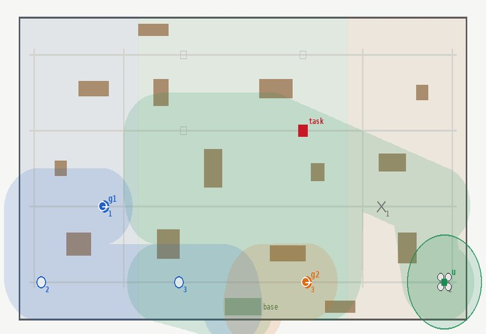
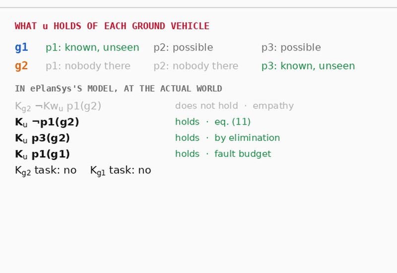
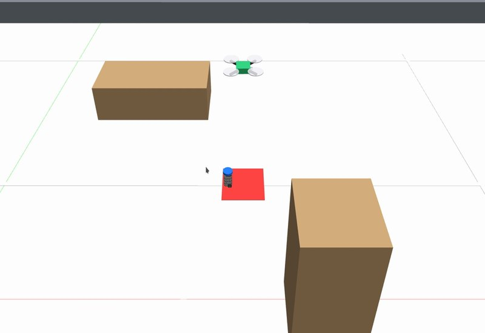
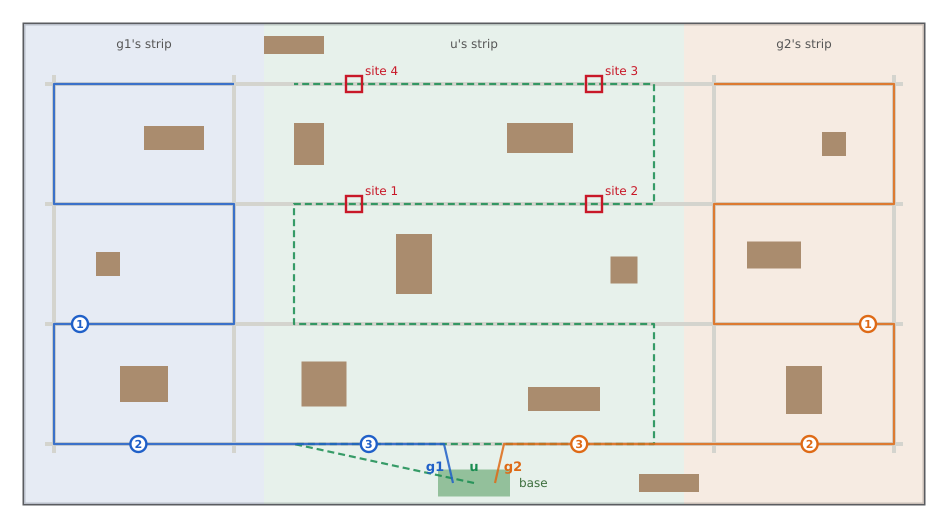

After Bramblett and Bezzo (2023) · belief and empathy particles · knowledge preconditions · conditional planning · a heterogeneous team out of contact · ROS 2
Bramblett and Bezzo[1] study a heterogeneous team that covers an area out of radio contact and finds tasks that need more than one kind of robot. Out of contact, each robot keeps, for every other, a few belief particles: where that robot is along its known route if it has had no fault, one, or two. A robot that has a fault keeps to the particle the others will look for it at, which the paper calls empathy. A robot that finds a task seeks the teammate it needs at that teammate's particles, in order, tells it of the task (the paper's gossip), and the team reallocates. The paper writes the belief updates in dynamic epistemic logic and allocates tasks with a genetic algorithm over an estimated makespan.
This page recreates the paper's scenario of its Figures 1 and 6 in Gazebo, with an aerial vehicle and two ground vehicles, and states it as an epistemic planning task for ePlanSys. The particles become the worlds of a Kripke model, the hail at a particle an event model, and the gossip a knowledge precondition: a ground vehicle drives to the task only when it knows of it. Aletheia computes, when the task is found, one policy for every fault pattern; the policy is run against the paper's own procedure, its ideal method and its flock method, and the paper's update rules are checked as formulas along it.
Every formulation did the task in all 24 runs, and no hail met a vehicle at a particle it did not hold. Aletheia's policy took 256.8 s on average and 350.4 s at worst; the paper's procedure 247.5 and 358.3 s; its ideal method 219.3 and 304.3 s; its flock 329.1 and 430.6 s. Seed by seed Aletheia's policy and the procedure finished within 1 s of each other in 12 of 24 seeds; with no fault they tie, and where one vehicle has had a fault the procedure, which estimates makespan, is 22.5 s sooner on average, which Aletheia, counting steps, cannot see. In a variant with latent tool faults, which the paper's particles cannot represent, Aletheia's policy is 65 s slower than the strongest version of the procedure. A timed search over the same epistemic task, written for this page and called by ePlanSys's planner plugin in Aletheia's place, gives ePlanSys the durations Aletheia lacks: in the replica it took 245.6 s on average and 358.9 s at worst, level with the paper's procedure (1.9 s sooner on average, the paired 95 % interval from −8.0 to 4.2 s) and 11.2 s sooner than Aletheia; in the variant 265.1 s on average, 61.1 s sooner than Aletheia, level with the strong procedure (261.0 s) and below it at worst (423.6 against 431.9 s). Its value is also a bound: in the kinematic model, no policy built from its moves over the aerial vehicle's knowledge has a lower expected time, and the strong procedure is within 1.2 s of it. Judged by when the task was done, by the simulator's poses; 24 seeds, every fault pattern at every site, each run under every formulation from the same start.
Package belief_empathy_demo; policy from eplansys, search by Aletheia; the paper's procedure, ideal and flock methods implemented over the same robots. Full account in Belief and Empathy Particles (PDF): the paper's constructs and their counterparts, the domain, the policy and what each robot knows after each step, the oblivious reading, the batch, the variant with latent tool faults and the scaling.
The runs
| take | world | what u did after finding the task | task done |
|---|---|---|---|
| ePlanSys, Aletheia | seed 11: g1 0 faults, g2 2 | g2 at 1: nobody; g2 at 2: nobody; g1 at 1: answered | 286.2 s, by g1 |
| the paper's procedure | seed 11: g1 0 faults, g2 2 | g2 at 1: nobody; g1 at 1: answered | 245.4 s, by g1 |
| ePlanSys, timed | seed 11: g1 0 faults, g2 2 | g2 at 1: nobody; g1 at 1: answered | 245.5 s, by g1 |
| ideal | seed 11: g1 0 faults, g2 2 | told at once | 237.1 s, by g1 |
| flock | seed 11: g1 0 faults, g2 2 | told at once | 224.4 s, by g1 |
| ePlanSys, Aletheia (variant) | seed 2: a latent tool fault in g2 | g2 at 1: answered; g1 at 1: answered | 245.8 s, by g1 |
| ePlanSys, timed (variant) | seed 2: a latent tool fault in g2 | g1 at 1: answered; g2 at 1: answered; attempt with g2 failed | 240.3 s, by g1 |
| procedure, strong (variant) | seed 2: a latent tool fault in g2 | g2 at 1: answered; g1 at 1: answered; attempt with g2 failed | 244.6 s, by g1 |
What the runs show

The paper in ePlanSys Particles as worlds, gossip as a precondition Every construct of the paper has a counterpart in the domain, and its update rules hold as formulas in every world of the policy. The one that does not carry over is its ordering of particles by likelihood. See the correspondence →
The policy A third particle known without a visit Two empty hails leave the aerial vehicle knowing that the vehicle has two faults and, from the fault budget, that the other has none. It goes straight to the other. A disconnected robot written as oblivious, the paper's reading, leaves no policy at all. See the policy →
Evaluation With durations, level with the paper, and a bound Aletheia, counting steps, loses time where one vehicle has had a fault. A timed search over the same Kripke model removes that loss and computes the least expected time any policy built from the same moves over the aerial vehicle's knowledge can reach; in the kinematic model the paper's procedure is 3.1 s above it, Aletheia 21.0 s, and what is left to the ideal method is the price of being out of contact. See the evaluation →The paper
The paper poses the problem of finding a distributed policy for a team of \(N_r\) robots with \(N_k\) kinds of capability, which searches a cluttered, partly unknown area with limited communication for \(N_t\) tasks at unknown places, each needing a subset \(R_\tau\) of the capabilities, and which minimises mission time while letting the team cooperate when a robot's abilities change out of contact (its Problem 4.1). Its framework has four parts. Each robot \(i\) keeps a finite set of particles \(\mathcal{P}_i = \{p_{ij,b}\}\): belief particles for every other robot \(j\), and empathy particles \(p_{ii,b}\), its estimate of what the others believe of it; the particles are ordered by likelihood, and a robot with a fault tracks its next one. While in contact the robots split the frontier by a generalized Dirichlet tessellation weighted by capability, its equation (3), and out of contact each robot computes the same partition over the common belief set \(\mathcal{C}_i\). Belief updates are written as action models of dynamic epistemic logic, its equations (8) to (13): an announcement when all are in contact, a perception that a robot is not at its particle, a perception of a task. Tasks are allocated by a nonlinear integer program over the believed states, its equations (14) to (16), solved by a genetic algorithm warm-started by its Algorithm 1. It builds on the authors' earlier work on prediction and implicit coordination[6].
Its simulations, in MATLAB, use teams of two to eight unmanned aerial and ground vehicles in fifteen random 50 by 50 m areas, three particles per robot moving at 100, 60 and 20 % of the vehicle's speed, a 10 m radio range and zero, one or two faults. Its Table I reports the mean mission time of the proposed method between an ideal method with unlimited communication and a flock method that keeps every robot in range throughout: 40.2, 48.6 and 53.1 s against 28.0, 30.4 and 32.9 s and 113.4, 156.8 and 179.3 s, for zero, one and two faults. Its experiments use two Husarion ROSbot 2.0 and a Crazyflie 2.1 under a motion capture system.
| the paper | here |
|---|---|
| two to eight robots, two kinds, several tasks | one aerial vehicle and two ground vehicles; one task, needing the aerial vehicle and a ground vehicle together, as in the paper's Figures 1 and 6 |
| frontier partition recomputed over the common belief set | the partition computed once at the start, in proportion to speed, and fixed coverage routes every robot knows |
| three particles at 100, 60 and 20 % of the speed | the same; a vehicle with two faults can no longer do a task |
| zero, one or two faults at any time | zero, one or two in the team, all before the task can be found |
| allocation by a genetic algorithm over makespan | the paper's procedure with the makespan estimate evaluated for both assignments, which is the optimum a genetic algorithm searches for; and Aletheia's policy |
| ideal and flock methods | both, over the same robots and controllers |
| MATLAB, and ROSbots with a Crazyflie | Gazebo 11 and ROS 2: two TurtleBot3 Burgers and a quadrotor flown in the plane |
Correspondence
The paper uses dynamic epistemic logic[2] to write how its robots' beliefs change, and plans with an optimiser over those beliefs. ePlanSys plans in the logic itself: the state is a pointed Kripke model, the actions are event models applied by the product update[3], and a policy is searched for over the models it reaches[4]. Each construct of the paper, and its counterpart:
| in the paper | in belief-empathy.epddl and ePlanSys |
|---|---|
| epistemic state \(s = (W, R_i, V, W_d)\), Def. 1 | the initial model plank builds from a finitary S5 theory: 12 worlds, 6 of them designated, those the aerial vehicle \(u\) considers possible |
| belief particles \(p_{ij,b}\) | the atoms \(\mathit{p1}(g), \mathit{p2}(g), \mathit{p3}(g)\): a world is a fault pattern, which particle each ground vehicle holds |
| empathy: a robot with a fault tracks its next particle | the identity "\(g\) stands at particle \(b\)" = "\(g\) has had \(b - 1\) faults", on which the hail's events rest; and the formula \(K_g\,\neg \mathit{Kw}_u\,\mathit{p1}(g)\), which holds at the start: \(g\) knows that \(u\) does not know where it is |
| common belief set \(\mathcal{C}_i\), particles propagated from the last common state | the routes, the speeds and the fault budget, common knowledge from the start; the particles' places are computed from them, by every robot alike |
| \(\mathit{announce}(\Omega)\) when all are in contact, eq. (9) | a public event, after which what was announced is common knowledge, \(C_{\mathcal{A}}\,\sigma\); eq. (9) writes the second level, \(K_i K_j \sigma_j\), of it |
| \(\mathit{perceive}(\neg \mathit{track}(p_{ij,b}))\) gives \(K_i \neg\sigma_j\), eq. (11) | the hail's absent event: after it \(K_u\,\neg\mathit{p}b(g)\), checked in every world |
| and then \(B_i\,\mathit{track}(p_{ij,b+1})\), eq. (12) | no counterpart: the models are S5, without a plausibility order, so \(u\) holds both later particles possible and the policy branches on both; the order of the search comes from the route, which reaches the second particle only from the first |
| \(\mathit{perceive}(\mathit{present}(\tau))\), eq. (13); the others do not learn it | \((\mathit{task})\) true, \(u\) knowing it and neither ground vehicle knowing whether |
| gossip: telling a robot out of contact of a task | the hail's met event, whose precondition holds \((\mathit{task})\): the vehicle that hears it learns of the task; and the precondition \(K_g\,\mathit{task}\) of the drive to the site |
| disconnected robots: their knowledge "is not affected" | not oblivious but unsure: a robot out of contact considers every event possible, the null one included. The oblivious reading leaves the vehicle that is hailed believing a contradiction; see below |
| capabilities \(R_\tau\), indicator \(\mathbf{I}^k_i\), eq. (15) | \(\mathit{uav}\), \(\mathit{ugv}\) and \(\mathit{p1}(g) \vee \mathit{p2}(g)\) in the preconditions of the drive to the site and of the task |
| allocation and ordering by a genetic algorithm over makespan, eqs. (14) to (16), Algorithm 1 | AO* over the product update: whom to seek, at which particle, and whom to send, all in one policy of least worst-case depth; no durations |
| the policy as a sequence \((s, j{:}a, s', \ldots)\), recomputed at each event | a conditional policy computed once, when the task is found, that branches on what each hail returns |
| "multi-player games with imperfect information are undecidable" | planning in dynamic epistemic logic is undecidable in general[4]; this task is finite, and AO* explores it to depth 10 exhaustively |
Environment
The area is 30 by 16 m, crossed by four streets and four avenues, with crates and columns standing in the blocks between them. Three robots leave a base at its south edge: an aerial vehicle \(u\), a quadrotor flown at 1.8 m over the obstacles at 0.5 m/s, and two ground vehicles \(g_1\) and \(g_2\), TurtleBot3 Burgers whose particles move at 0.16, 0.096 and 0.032 m/s, so that \(u\) is about three times as fast, as in the paper. At the start, in contact, they split the area in proportion to speed: the west strip to \(g_1\), the east strip to \(g_2\), and the middle, twice as wide, to \(u\). Each then covers its strip along a route every robot knows, northwards lane by lane. The radio reaches 2.5 m. A task stands at one of four sites on \(u\)'s streets, which the seed decides; it needs \(u\) and a ground vehicle with fewer than two faults within 1 m of it together for 8 s.

Faults happen at times the seed fixes, a first between 20 and 45 s after the start and a second before 50 s, so before \(u\) can find the task. A vehicle with a fault does what the others expect of it: its top speed falls, and it goes to its next particle, back along its route if the particle is behind it, and holds it. Before any run (tools/check_layout.py) it is checked that every way a ground vehicle drives keeps 1.00 m from every obstacle, that a vehicle's three particles are at least 4.0 m apart, more than the radio's range, whenever a hail can happen, so that a hail at one particle cannot reach a vehicle at another, and that every site is found after the last fault.
The domain
| action | kind | u observes | the ground vehicle named | the other |
|---|---|---|---|---|
| fly-p1(u, g) | ontic | that it flew | unsure whether anything happened | |
| back-p2(u, g), back-p3(u, g) | ontic | that it flew | unsure whether anything happened | |
| hail-pb(u, g) | ontic, two outcomes | which: met or absent | fully, where it holds particle b; unsure elsewhere | unsure |
| cross-west(u), cross-east(u) | ontic | that it crossed | unsure whether anything happened | |
| go-site(g) | ontic | unsure | that it drove | unsure |
| fly-site(u), perform(u, g) | ontic | fully | fully when named | unsure |
\(u\) reaches a vehicle's first particle directly, in the half of the area the vehicle covers, and its second and third only by following the route back from the one before, where it has hailed and found nobody: the particles lie in that order along the route. Flying to the other half is an action of its own, so that a policy of least depth seeks the nearer vehicle first. A hail has two events: the vehicle is there, which requires \(\mathit{p}b(g)\) and \((\mathit{task})\), or it is not. The vehicle hears the hail only in the worlds where it holds that particle, and by observing the met event it learns its precondition, the task. A drive to the site requires \(K_g\,\mathit{task}\) and \(\mathit{p1}(g) \vee \mathit{p2}(g)\); the task requires \(u\) and such a vehicle at the site, and the goal is \((\mathit{done})\). The initial model has 12 worlds: the six fault patterns of at most two faults, each with the task present or not; \(u\) knows of the task, each vehicle knows only its own particle, and the six with the task are designated.
(:event e-met-1 :parameters (?u ?g - agent) :precondition (and (uav ?u) (by1 ?g) (p1 ?g) (task)) ; there, and the call carries the task :effects (:and (free ?u) (not (by1 ?g)))) (:event e-absent-1 :parameters (?u ?g - agent) :precondition (and (uav ?u) (by1 ?g) (not (p1 ?g))) :effects (:and (free ?u) (not (by1 ?g)) (passed1 ?g))) ; may follow the route back (:action hail-p1 :parameters (?u ?g - agent | (/= ?u ?g)) :action-type (hail (e-met-1 ?u ?g) (e-absent-1 ?u ?g) (nil)) :observability-conditions (:and (?u Fully) (?g (if (p1 ?g) Fully else Unsure)) (default Unsure))) (:event e-go-site :parameters (?g - agent) :precondition (and (ugv ?g) (not (at-site ?g)) (or (p1 ?g) (p2 ?g)) ([?g] (task))) :effects (at-site ?g))
The policy
With the site in the east half, Aletheia's AO*[5], with consistent beliefs required, returns at depth 10 after 5 848 expansions, in 1.2 s:
fly-p1(u, g2)
hail-p1(u, g2)
answered: fly-site(u)
go-site(g2)
perform(u, g2)
no answer: back-p2(u, g2)
hail-p2(u, g2)
answered: fly-site(u)
go-site(g2)
perform(u, g2)
no answer: cross-west(u)
fly-p1(u, g1)
hail-p1(u, g1)
fly-site(u)
go-site(g1)
perform(u, g1)
\(u\) seeks the nearer vehicle, \(g_2\), at its first particle and, if nobody answers, at its second. It never flies to the third. If both hails go unanswered, \(u\) knows that \(g_2\) holds its third particle, since it holds one of the three, so it has had two faults and can no longer do the task; and since at most two faults happen in the team, \(g_1\) has had none. The policy crosses to \(g_1\)'s first particle, where the hail cannot fail, and the policy has no branch there. Where a vehicle answers, it is the vehicle that goes to the site, and \(u\) flies there at the same time. With the site in the west the policy is the same with the vehicles swapped. In the paper's terms, the policy holds what Algorithm 1 and the genetic algorithm produce, an order of visits and an assignment, together with the conclusions the paper's rules leave to the designer: that the third particle need not be visited, and that the other vehicle is then sound. It is a joint policy over what is common knowledge, which each robot could compute for itself, as in implicit coordination[7].
Knowledge, step by step
tools/trace_policy.py replays the policy through the product update in each of the six worlds and evaluates, at the actual world after every step, the formulas the paper's rules state. In the world where \(g_2\) has had two faults and \(g_1\) none:
| step | Kg2 p3(g2) | Kg2 ¬Kwu p1(g2) | Ku ¬p1(g2) | Ku p3(g2) | Ku p1(g1) | Kg1 task | Ku Kg1 task | ¬Kg2 ¬Kg1 task | done |
|---|---|---|---|---|---|---|---|---|---|
| initial state | yes | yes | – | – | – | – | – | – | – |
| fly-p1(u, g2) / e-fly-p1 | yes | yes | – | – | – | – | – | – | – |
| hail-p1(u, g2) / e-absent-1 | yes | – | yes | – | – | – | – | – | – |
| back-p2(u, g2) / e-back-p2 | yes | – | yes | – | – | – | – | – | – |
| hail-p2(u, g2) / e-absent-2 | yes | – | yes | yes | yes | – | – | – | – |
| cross-west(u) / e-cross-west | yes | – | yes | yes | yes | – | – | – | – |
| fly-p1(u, g1) / e-fly-p1 | yes | – | yes | yes | yes | – | – | – | – |
| hail-p1(u, g1) / e-met-1 | yes | – | yes | yes | yes | yes | yes | yes | – |
| fly-site(u) / e-fly-site | yes | – | yes | yes | yes | yes | yes | yes | – |
| go-site(g1) / e-go-site | yes | – | yes | yes | yes | yes | yes | yes | – |
| perform(u, g1) / e-perform | yes | – | yes | yes | yes | yes | yes | yes | yes |
In all six worlds: each vehicle knows its own particle throughout, the paper's eq. (13) for faults; at the start each vehicle knows that \(u\) does not know where it is, the empathy state; after an unanswered hail \(u\) knows the vehicle is not at that particle, eq. (11), and still holds both later ones possible, where eq. (12) would believe the next; after a meeting \(u\) knows that the vehicle knows of the task, and the other vehicle cannot rule out that it was told; and no agent ever believes a contradiction. tools/validate.sh asserts these 50 checks.
The oblivious reading
The paper states that after a robot perceives a task, "the knowledge of disconnected robots is not affected, nor does robot \(i\) update its belief that a disconnected robot would know the updated information". Read as an observability, a disconnected robot is oblivious: from every event of an action it considers only the null event possible, and so believes that nothing happened. The domain was planned that way first, with the same events and the oblivious type (variants/hailing-oblivious.epddl). With consistent beliefs required, Aletheia finds no policy. Without that requirement it returns a policy of depth 8, and replayed through the product update the policy leaves the vehicle met believing a contradiction in 5 of its hails: the vehicle had believed, obliviously, that \(u\) never left, and every world it considered possible falsifies the precondition of the hail it then hears, so it considers no world possible and its knowledge of the task holds vacuously. In one world the policy sends \(g_1\) to the site where, in the actual world, nobody has told it of the task.
The domain therefore makes a robot out of contact unsure: from every event it considers every event of the action possible, the null one included. It does not learn what happened, and does not come to believe anything false either, so the knowledge of every robot stays truthful, which is the paper's eq. (8): the true world is accessible to every robot. The empathy rule is what makes this enough: since a vehicle with a fault holds its next particle, the true world is always among those \(u\) considers.
The paper's methods
| formulation | after the task is found | radio |
|---|---|---|
| ePlanSys, Aletheia | Aletheia plans over the instance for the half the site is in; ePlanSys's epistemic executor runs the policy, choosing each branch by the event the hail reports | 2.5 m |
| ePlanSys, timed | the timed search (below) plans over the same instance, through the same planner plugin, told where the site is; the same executor runs its policy | 2.5 m |
| the paper's procedure | \(u\) estimates, for each ground vehicle, the makespan of seeking it at its most likely remaining particle and of both then reaching the site, and seeks the least; after every hail it estimates again with what it learned, and assigns the task to the vehicle it met or sends it on | 2.5 m |
| ideal | every robot hears every other: the vehicle of least makespan is told at once, wherever it is | unlimited |
| flock | the team sweeps the whole area together in two bands, each ground vehicle 2 m from \(u\), at the speed of its slowest member; a vehicle with two faults leaves; on finding the task, the vehicle of least makespan goes | 2.5 m |
The paper's makespan estimate is the time to the meeting, if one is needed, then the longer of the two journeys to the site, with the vehicle at the speed of the particle it is believed to hold. The paper searches the assignments with a genetic algorithm; with one task and two vehicles there are two, and both are evaluated, which is the optimum the algorithm approaches. The procedure keeps a vehicle among the candidates until it learns that the vehicle cannot do the task: it does not infer it from where the vehicle is not. Every formulation drives the robots through the same requests, with the same controllers, and a ground vehicle drives to the site only on a site it has heard on the radio.
The paper recomputes the partition of the frontier as the robots cover, and the recreation fixes it at the start. On the time to the task this leaves the paper's procedure no weaker: out of contact the partition is computed over the common belief set, which a fault does not change until the robots meet (its eq. (10) updates the set only on an announcement), so it cannot move the sound vehicle toward the site before the vehicle is hailed, and once hailed the vehicle is sent to the site directly. The re-partitioning bears on coverage, which these runs do not measure.
Measurement
The mission time of a run is the simulated time from the common start to the task done, judged by the simulator's poses: \(u\) and a vehicle with fewer than two faults within 1 m of the site for 8 s. The paper's mission time also includes covering the whole area, which these runs do not continue to. Every hail is recorded with the particle it was made at and whether the vehicle answered, and every meeting at a particle the vehicle did not hold would be counted against the model; there were none.
Evaluation
Each seed fixes one of the six fault patterns, one of the four sites and the times of the faults; the 24 seeds hold every pattern at every site once, and every seed ran under all five formulations from the same start.
| formulation | task done | time | worst | search | hails | third |
|---|---|---|---|---|---|---|
| ideal | 24 / 24 [0.86, 1.00] | 219.3 s | 304.3 s | 0.0 s | – | – |
| ePlanSys, Aletheia | 24 / 24 [0.86, 1.00] | 256.8 s | 350.4 s | 42.3 s | 1.67 | 0 |
| ePlanSys, timed | 24 / 24 [0.86, 1.00] | 245.6 s | 358.9 s | 50.6 s | 1.67 | 0 |
| the paper's procedure | 24 / 24 [0.86, 1.00] | 247.5 s | 358.3 s | 53.3 s | 1.67 | 0 |
| flock | 24 / 24 [0.86, 1.00] | 329.1 s | 430.6 s | 0.0 s | – | – |
Task done: runs out of 24, with the Wilson 95 % interval. Time: mean and worst mission time, in simulated seconds. Search: mean time from the task found to the vehicle that did it knowing of it. Hails: mean number per run; third: runs with a hail at a third particle.
By the number of faults, as in the paper's Table I:
| formulation | 0 faults (4 seeds) | 1 fault (8) | 2 faults (12) | paper, 0 | paper, 1 | paper, 2 |
|---|---|---|---|---|---|---|
| ideal | 199.2 s | 215.0 s | 228.8 s | 28.0 s | 30.4 s | 32.9 s |
| ePlanSys, Aletheia | 206.9 s | 257.7 s | 272.8 s | – | – | – |
| ePlanSys, timed | 206.8 s | 236.8 s | 264.4 s | – | – | – |
| the paper's procedure | 206.8 s | 235.2 s | 269.3 s | 40.2 s | 48.6 s | 53.1 s |
| flock | 247.2 s | 384.5 s | 319.4 s | 113.4 s | 156.8 s | 179.3 s |
Both Aletheia's policy and the procedure did the task in every run, and both hailed only 1.7 particles per run on average. They differed in 12 of 24 seeds, the policy sooner in 4 and later in 8. In 4 of those the procedure, after a hail found nobody, estimated again and went for the other vehicle, which it believed faster, where the policy followed the first vehicle's route back to its second particle, which is as deep in steps. Averaged over all seeds the procedure was 9.3 s sooner. Neither ever hailed a third particle: the policy because it knows a vehicle there cannot do the task, the procedure because a vehicle that slow is never worth it in its estimate. The two reasons coincide in this scenario, and the variant below separates them.
The ideal method, with nothing to search for, was 37.5 s sooner than Aletheia's policy on average: the price of being out of contact. The flock was 72.3 s slower than Aletheia's policy, and sooner in 3 seeds. With one fault it slows to the faulted vehicle's speed, 384.5 s on average; with two it is quicker again, 319.4 s, because a vehicle with two faults leaves it and the rest go on at full speed. The order of the paper's Table I holds, ideal before the method out of contact before the flock, but with a smaller margin to the flock: the area here takes two passes, and the time stops at the task where the paper's also covers the area.
The timed search, over the same task and through the same plugin, planned in 0.36 s against Aletheia's 1.2 s and took 245.6 s on average, 358.9 s at worst: level with the paper's procedure (1.9 s sooner on average, the paired 95 % interval from −8.0 to 4.2 s), sooner in 1 seed, within 1 s in 19 and later in 4. It weighs each continuation over the fault patterns still possible, where the procedure estimates one hail at a time as if the vehicle were at the particle hailed; the kinematic model put the difference at 3.1 s over every pattern at every site. Against Aletheia, the same knowledge without durations, it was 11.2 s sooner on average.
Per fault pattern and half of the area:
| faults; half | ideal | Aletheia | timed | procedure | flock |
|---|---|---|---|---|---|
| g1 0, g2 0 faults; west | 194 s | 207 s · g1@1+ | 207 s · g1@1+ | 207 s · g1@1+ | 272 s |
| g1 0, g2 0 faults; east | 205 s | 207 s · g2@1+ | 207 s · g2@1+ | 207 s · g2@1+ | 222 s |
| g1 1, g2 0 faults; west | 227 s | 300 s · g1@1- g1@2+ | 276 s · g1@1- g1@2+ / g1@1- g2@1+ | 271 s · g1@1- g2@1+ | 427 s |
| g1 1, g2 0 faults; east | 205 s | 207 s · g2@1+ | 207 s · g2@1+ | 207 s · g2@1+ | 340 s |
| g1 0, g2 1 faults; west | 194 s | 207 s · g1@1+ | 207 s · g1@1+ | 207 s · g1@1+ | 424 s |
| g1 0, g2 1 faults; east | 234 s | 317 s · g2@1- g2@2+ | 257 s · g2@1- g1@1+ | 257 s · g2@1- g1@1+ | 347 s |
| g1 2, g2 0 faults; west | 238 s | 293 s · g1@1- g1@2- g2@1+ | 275 s · g1@1- g1@2- g2@1+ / g1@1- g2@1+ | 271 s · g1@1- g2@1+ | 315 s |
| g1 2, g2 0 faults; east | 204 s | 207 s · g2@1+ | 207 s · g2@1+ | 207 s · g2@1+ | 258 s |
| g1 0, g2 2 faults; west | 194 s | 207 s · g1@1+ | 207 s · g1@1+ | 207 s · g1@1+ | 311 s |
| g1 0, g2 2 faults; east | 249 s | 314 s · g2@1- g2@2- g1@1+ | 257 s · g2@1- g1@1+ | 257 s · g2@1- g1@1+ | 257 s |
| g1 1, g2 1 faults; west | 248 s | 299 s · g1@1- g1@2+ | 303 s · g1@1- g1@2+ / g1@1- g2@1- g1@2+ | 337 s · g1@1- g2@1- g1@2+ | 428 s |
| g1 1, g2 1 faults; east | 240 s | 316 s · g2@1- g2@2+ | 337 s · g2@1- g1@1- g2@2+ | 337 s · g2@1- g1@1- g2@2+ | 347 s |
A variant
In the paper, and in the recreation above, a fault slows a vehicle, and the slowness is where the vehicle is: a particle stands for both. A vehicle on its third particle is both slow and, here, unable, so the paper's makespan estimate, which prefers fast vehicles, avoids it for the same reason the policy's inference does. The variant separates the two. A drive fault still slows a vehicle, which tracks its next particle, and no longer costs it the task. A tool fault, a gripper or a sampling probe that has failed, leaves its speed and its particle as they were, and is known to nobody, the vehicle included, until the vehicle tries to use it: the attempt at the task then fails. A tool that is not exercised before the task cannot be checked before it, so a fault in it shows only in use. At most two faults of either kind happen in the team, and at least one vehicle's tool works: twelve fault patterns (belief-empathy-latent.epddl). Where a vehicle is says nothing of whether it can do the task, and a hail cannot tell either; only an attempt can.
On time, the strongest version of the paper's procedure beats Aletheia's policy: 261.0 s against 326.2 s on average, 431.9 s against 581.2 s at worst. A timed search over the same epistemic task, written for this page, matches the procedure: 265.1 s on average and 423.6 s at worst, within 1 s of it in 11 of 24 seeds. The epistemic model's own contribution is elsewhere: a policy valid in all twelve patterns, and the inference that makes the procedure strong. The procedure as published, without the joint fault budget and the assumption that some tool works, took 273.3 s, 12.3 s more than the strong one.
Aletheia's policy, of depth 12 after 36 136 expansions (15.0 s of planning, which the simulation runs through and the mission time includes), recruits both vehicles. The first vehicle met is sent to the site at once, and the aerial vehicle goes on to the other, so that a tool fault in one costs no second search. Elimination still applies: two unanswered hails tell \(u\) that a vehicle has had two drive faults, so that no tool has failed, and it attempts with the vehicle it has without visiting the other. With the site in the east:
fly-p1(u, g2)
hail-p1(u, g2)
answered: go-site(g2)
cross-west(u)
fly-p1(u, g1)
hail-p1(u, g1)
answered: fly-site(u)
go-site(g1)
perform(u, g1)
no answer: perform(u, g2)
no answer: back-p2(u, g1)
hail-p2(u, g1)
answered: fly-site(u)
go-site(g1)
perform(u, g1)
no answer: perform(u, g2)
no answer: fly-site(u)
perform(u, g2)
no answer: back-p2(u, g2)
hail-p2(u, g2)
answered: go-site(g2)
cross-west(u)
fly-p1(u, g1)
hail-p1(u, g1)
answered: fly-site(u)
go-site(g1)
perform(u, g1)
no answer: perform(u, g2)
no answer: fly-site(u)
perform(u, g2)
no answer: back-p3(u, g2)
hail-p3(u, g2)
fly-site(u)
go-site(g2)
perform(u, g2)
Five formulations run the variant. Each optimises a different quantity, and the table says which. The second is a planner written for this page: a timed AND-OR search over the same grounded EPDDL task (tools/timed_policy.py). Its states are the task's pointed models, advanced by the product update and contracted to their bisimulation quotient; an action is applicable where its designated events cover the designated worlds, so that the knowledge precondition of the drive to the site still gates it; its branches are the designated events, weighted by the fault patterns that take them. A node also carries a clock: where \(u\) is, the time, and when each vehicle sent reaches the site, with the durations of the kinematic model. Its output is a policy in Aletheia's format, which ePlanSys's planner plugin validates and its executor runs as it runs Aletheia's. The models the search can reach, and the transitions between them, do not depend on where the site is or on the clock: they are computed once per task, in about 156 s for the variant and 20 s for the replica, and kept with the package as the task's skeleton. When the task is found, the planner plugin calls the search in place of Aletheia, with the site, and the search times its moves over the skeleton: 0.37 s in the variant from the request to the policy, against 15.0 s for Aletheia. Both are in the mission time. The search runs in the replica as well, as a fifth formulation there.
| formulation | what it knows | what it optimises |
|---|---|---|
| ePlanSys, Aletheia | the Kripke model: every fault pattern, what each robot knows of it, and how every event changes that | the number of steps of the worst branch, over all twelve patterns; no durations |
| ePlanSys, timed | the same Kripke model and product update, the same knowledge preconditions | the expected time to the task over the twelve patterns, with durations from the kinematic model, the worst case breaking ties |
| procedure, as published | each vehicle's particles on their own, in order of likelihood; no joint fault budget, no assumption that some tool works; a vehicle whose attempt fails is dropped | the makespan of the next assignment, at the most likely particle, estimated again after every observation |
| procedure, strong | every fault pattern consistent with each hail answer, each attempt, the budget and the assumption that some tool works: the same first-order knowledge \(u\) holds in the Kripke model | the mean makespan, over those patterns, of every assignment (one vehicle or both, as the paper's integer program allows) and order of visits; attempts in order of arrival; estimated again after every observation |
| ideal | the strong procedure's knowledge, and where every vehicle is | the same mean makespan |
The strong procedure is the paper's procedure as its authors could plausibly extend it: the same hail answers, the same fault budget, and a capability term in its estimate. It knows what \(u\) knows in the Kripke model, so the comparison between it and the policy is not between inference and a heuristic. It is between two ways of deciding on the same knowledge: AO*'s contingent policy, least in worst-case steps and blind to time, and a greedy mean makespan estimated again after each observation. The gap between the published and the strong procedure is what the joint model gives: the budget and the assumption that some tool works, which the epistemic model states once and the procedure has to be extended by hand to use.
| formulation | task done | mean | worst | predicted mean / worst | hails | third | failed attempts | optimises |
|---|---|---|---|---|---|---|---|---|
| ePlanSys, Aletheia | 24 / 24 | 326.2 s | 581.2 s | 331.7 / 610.8 s | 2.75 | 2 | 6 | worst-case steps |
| ePlanSys, timed | 24 / 24 | 265.1 s | 423.6 s | 269.8 / 435.2 s | 2.62 | 0 | 6 | expected time |
| procedure, as published | 24 / 24 | 273.3 s | 436.3 s | 280.9 / 446.4 s | 1.83 | 0 | 6 | next makespan |
| procedure, strong | 24 / 24 | 261.0 s | 431.9 s | 267.3 / 443.4 s | 2.58 | 1 | 6 | mean makespan |
| ideal | 24 / 24 | 230.7 s | 344.5 s | 235.6 / 349.8 s | – | – | 7 | mean makespan |
Every formulation did the task in every run. The kinematic model predicted the order of the rows and their means within 8 s. No formulation can know a tool before it is tried: each attempted with a vehicle whose tool had failed in 6 or 7 runs. Seed by seed, Aletheia's policy was sooner than the strong procedure in 6 of 24 seeds and later in the rest; the timed policy was sooner in 4, within 1 s in 11, and 4.1 s later on average.
The gap between the policy and the strong procedure has three sources, found by replaying the policy with the kinematic model of tools/estimate.py under two changes in turn: attempting with the recruited vehicles in the order they reach the site, and fetching the other vehicle where the policy sends one with two drive faults. What is left is the objective itself, chiefly the recruiting of the second vehicle where the mean makespan would skip it.
| part of the mean gap | seconds | from |
|---|---|---|
| attempts in a fixed order | 23.5 s | the missing time model |
| a vehicle with two drive faults sent | 22.6 s | the missing time model |
| the rest: recruiting where the mean would not | 18.3 s | the objective |
| the gap, predicted | 64.4 s | |
| the gap, measured in the simulator | 65.2 s |
The first two parts come from the missing time model, the third from the objective. Aletheia has no action costs: AO* counts steps. Encoding travel as steps of fixed length would not repair it, because a sequential policy adds up the legs of drives that run at the same time, so depth would follow the total work and not the makespan, and would penalise the recruiting of both vehicles, which is the right move. Aletheia has no temporal epistemic planning, and this is where that shows; the timed search supplies it for this task.
The timed search keeps the knowledge and changes the objective, and the parts of the gap close with it: in the kinematic model it is predicted at 269.8 s on average and 435.2 s at worst, against 267.3 and 443.4 s for the strong procedure. What keeps it from doing better is the domain's movement, not its reasoning: \(u\) reaches a second or third particle only along the route from the first, while the procedure, in the same model, flies to any particle directly. In a copy of the domain (variants/belief-empathy-latent-direct.epddl) where \(u\) may fly to a vehicle's second or third particle from anywhere, the site included, once it knows the particles before it empty, as the simulated aerial vehicle can, the timed policy is predicted at 267.8 s on average and 443.7 s at worst over all 48 pairs of site and pattern, against 269.0 and 454.4 s for the strong procedure. The copy was not run in the simulator.
Seed by seed, in the simulator:
| seed | faults | site | Aletheia | timed | published | strong | ideal |
|---|---|---|---|---|---|---|---|
| 1 | g1 sound, g2 sound | (-4, 2) | 194 | 193 | 193 | 193 | 169 |
| 2 | g1 sound, g2 tool | (4, 2) | 246 | 241 | 353 | 245 | 237 |
| 3 | g1 sound, g2 1 drive | (4, 6) | 340 | 268 | 268 | 268 | 261 |
| 4 | g1 sound, g2 1 drive + tool | (-4, 6) | 257 | 275 | 220 | 266 | 218 |
| 5 | g1 sound, g2 2 drive | (-4, 2) | 229 | 220 | 193 | 193 | 169 |
| 6 | g1 tool, g2 sound | (4, 2) | 254 | 201 | 195 | 195 | 193 |
| 7 | g1 tool, g2 1 drive | (4, 6) | 350 | 355 | 365 | 355 | 272 |
| 8 | g1 1 drive, g2 sound | (-4, 6) | 352 | 266 | 298 | 266 | 263 |
| 9 | g1 1 drive, g2 tool | (-4, 2) | 271 | 252 | 324 | 251 | 192 |
| 10 | g1 1 drive, g2 1 drive | (4, 2) | 311 | 316 | 319 | 284 | 208 |
| 11 | g1 1 drive + tool, g2 sound | (4, 6) | 434 | 239 | 218 | 218 | 216 |
| 12 | g1 2 drive, g2 sound | (-4, 6) | 581 | 265 | 298 | 266 | 263 |
| 13 | g1 sound, g2 sound | (4, 6) | 272 | 219 | 218 | 218 | 216 |
| 14 | g1 sound, g2 tool | (-4, 6) | 242 | 253 | 220 | 246 | 218 |
| 15 | g1 sound, g2 1 drive | (-4, 2) | 223 | 213 | 193 | 193 | 169 |
| 16 | g1 sound, g2 1 drive + tool | (4, 2) | 307 | 240 | 245 | 251 | 237 |
| 17 | g1 sound, g2 2 drive | (4, 6) | 575 | 268 | 268 | 268 | 261 |
| 18 | g1 tool, g2 sound | (-4, 6) | 319 | 266 | 344 | 266 | 263 |
| 19 | g1 tool, g2 1 drive | (-4, 2) | 388 | 386 | 398 | 392 | 265 |
| 20 | g1 1 drive, g2 sound | (4, 2) | 388 | 201 | 195 | 200 | 193 |
| 21 | g1 1 drive, g2 tool | (4, 6) | 426 | 424 | 436 | 432 | 344 |
| 22 | g1 1 drive, g2 1 drive | (-4, 6) | 352 | 355 | 358 | 355 | 304 |
| 23 | g1 1 drive + tool, g2 sound | (-4, 2) | 277 | 244 | 243 | 243 | 214 |
| 24 | g1 2 drive, g2 sound | (4, 2) | 241 | 201 | 195 | 200 | 193 |
The least expected time
The timed search does more than produce a policy. Its value at the root is the least expected time to the task of any policy built from its moves, seeking a vehicle at a particle, sending a vehicle met and trying a vehicle sent, over what the aerial vehicle knows: every fault pattern weighted alike, with the durations of the kinematic model. In the replica, and in the variant's domain with direct movement, those moves include every decision the paper's procedure and the strong procedure make, so the value bounds what any procedure over the same knowledge can reach on average. tools/timed_bound.py computes it for every fault pattern at every site, times every formulation there by the same model, and checks that the bound holds at each site.
| formulation | replica: mean | worst | above the bound | variant: mean | worst | above the bound |
|---|---|---|---|---|---|---|
| least expected time (the timed search) | 251.2 s | 369.3 s | 0.0 | 267.8 s | 443.7 s | 0.0 |
| ePlanSys, timed, in the domain as written | 251.2 s | 369.3 s | 0.0 | 271.3 s | 454.4 s | +3.5 |
| procedure, strong | – | – | – | 269.0 s | 454.4 s | +1.2 |
| the paper's procedure, as published | 254.3 s | 369.3 s | +3.1 | 281.2 s | 446.5 s | +13.4 |
| ePlanSys, Aletheia | 272.2 s | 363.1 s | +21.0 | 327.8 s | 610.8 s | +60.0 |
| ideal: every robot heard | 224.1 s | 309.7 s | −27.1 | 235.0 s | 382.4 s | −32.8 |
In the replica the timed policy is the bound itself. The paper's procedure is 3.1 s above it on average: it chooses one hail at a time, by the makespan it would have if the vehicle were at the particle hailed, where the search weighs every continuation over the fault patterns still possible. Aletheia's policy, the same knowledge without durations, is 21.0 s above it. In the variant the strong procedure comes within 1.2 s of the bound, which is all that planning the whole contingent tree adds over its greedy estimate; the procedure as published is 13.4 s above, 12.2 s of it the joint inference it lacks; Aletheia is 60.0 s above. Of the 92.8 s between Aletheia and the ideal method, 56.5 s is time, which the timed search recovers over the same model; 3.5 s is the domain's movement, which the direct-movement copy recovers; and 32.8 s, the distance from the bound to the ideal method, is what the aerial vehicle does not know. That last part is the price of being out of contact: no policy over the same knowledge recovers any of it, and only an observation or a message could. The bound is on the mean. Asked for the worst case first, the same search returns a policy that finishes every pattern at every site within 432.8 s, against 454.4 s for the strong procedure, at 12.7 s more on average. A bound on the worst case is a property of the whole policy, every branch at once, which a procedure choosing one assignment at a time does not compute.
Scaling
The paper runs teams of up to eight robots, with an allocation of complexity \(O(nm^2)\) for \(n\) robots and \(m\) tasks. The same domain, unchanged, with \(n\) ground vehicles, the first half covering the west, the site in the east, and the same budget of two faults, grows to \(1 + 2n + n(n-1)/2\) fault patterns (tools/scaling.py):
| robots | ground vehicles | fault patterns | ground actions | depth | expansions | wall time |
|---|---|---|---|---|---|---|
| 3 | 2 | 6 | 54 | 10 | 5 848 | 0.7 s |
| 4 | 3 | 10 | 100 | 9 | 4 609 | 1.0 s |
| 5 | 4 | 15 | 160 | 9 | 5 588 | 2.8 s |
| 6 | 5 | 21 | 234 | 9 | 5 917 | 6.4 s |
| 7 | 6 | 28 | 322 | 9 | 6 108 | 12.6 s |
| 8 | 7 | 36 | 424 | 9 | 6 127 | 23.6 s |
| 9 | 8 | 45 | 540 | 9 | 6 137 | 53.4 s |
Every team was solved, from 0.7 s for 2 ground vehicles to 53.4 s for 8, the paper's largest team with the aerial vehicle. The time roughly doubles with each vehicle added, while the expansions stay near 6 000: the models grow with the fault patterns while the policy barely does. Its depth falls from 10 to 9 once a second vehicle covers the aerial vehicle's half, where a neighbour can be sought without crossing. The paper's allocation is polynomial; this search is exhaustive, and the budget of two faults is what keeps its fault patterns quadratic in the team.
Implementation
Four defects were found while the demonstration was built. ePlanSys's executor dispatches together consecutive actions of a policy only when the agents they name are disjoint. The drive to the site named \(u\) as well as the vehicle, so that \(u\) would observe it, and it ran after \(u\)'s flight to the site instead of with it, which cost a trial run 29 s. The drive now names the vehicle alone, and \(u\) is unsure of it like everyone else; the policy is unchanged. In the demonstration's own geometry, the function that finds a point along a path tested for the last segment by identity, and Python shares equal tuple constants, so a path that passed a point twice ended at its first visit; it stalled the flock at a turn and was found there. The first batch found the third: a robot saw the task from 1.2 m, narrower than the 4 m between lanes assumes, so that in the flock a site on a street was seen only by the ground vehicle driving it, and when that vehicle left the flock with two faults the task was never found. Detection is now the half-width of the lanes, 2.2 m, checked before any run, and the batch was run again in full. The fourth was in the timed search's clock. In the replica a ground vehicle answers a drive to the site only on arriving, and the executor, which runs consecutive actions on disjoint agents as one group and waits for the whole group, held the aerial vehicle until then: where the search had sent one vehicle and flown on to recruit the other, \(u\) waited at the first vehicle's particle for over two minutes, and seed 6 took 323.6 s against 250.5 s planned. The search now carries that hold in its clock, and so does the kinematic model it is checked with; the twelve runs made before the change are kept apart and not reported.
Limits
The recreation is of the paper's scenario, not of its whole framework. There is one task and one aerial vehicle; the partition is computed once, and the frontier is not recomputed over the common belief set; coverage routes are fixed and known. Faults happen before the task can be found, because the policy is computed when it is found and a fault after that moment is outside its model. A vehicle with two faults is taken to have lost the capability, where the paper only slows it, so that the policy has a reason to prefer one vehicle to another without durations.
The timed search was written for this page, not taken from Aletheia. Its moves are this task's, seek, send and try, each a fixed sequence of the domain's actions, and its durations come from the kinematic model the strong procedure estimates with, so that the two share their idea of time and the simulator tests both; it is not a domain-independent temporal planner. Its skeleton is computed before the mission, once per task. The bound of the last section holds in the kinematic model, over the moves the search considers; the variant's direct-movement domain was compared in that model only.
Aletheia's AO* minimises the depth of the worst branch and has no durations: its order of search and its choices are the least deep, not the quickest, and where the paper's procedure, which estimates makespan, chooses otherwise, the difference is the metric and not what either knows. The executor is one process and dispatches every robot's actions; a ground vehicle drives only on a site it heard on the radio, and the knowledge check of ePlanSys's executor stops a drive whose precondition it does not find in its model. The task is found when a robot comes within 2.2 m of its site, by the simulator's poses, the half-width of the coverage lanes. Mission time includes the planner's wall time, during which the simulation ran; the batch ran six simulations at once.
References
Reproduction
bash tools/validate.sh # the area, both policies in every world, the update rules, the oblivious reading python3 tools/make_world.py --seed 11 --out RUN ros2 launch belief_empathy_demo be_launch.py dir:=RUN formulation:=epistemic bash tools/run_one.sh 11 particles RUN 1 # one run in its own lane bash tools/batch.sh 1 24 BATCH 6 # every seed under the five formulations VARIANT=latent bash tools/batch.sh 1 24 LBATCH 6 # the variant under its five python3 tools/analyse.py BATCH # runs.csv and analysis.json python3 tools/timed_policy.py --task TASK.json --plan POLICY.json --site 4 2 # the timed search, as the plugin calls it python3 tools/timed_bound.py --latent-pre PRE --direct DIRECT --replica-batch BATCH --out bound.json # the least expected time python3 tools/scaling.py OUT --max 8 # teams of two to eight ground vehicles